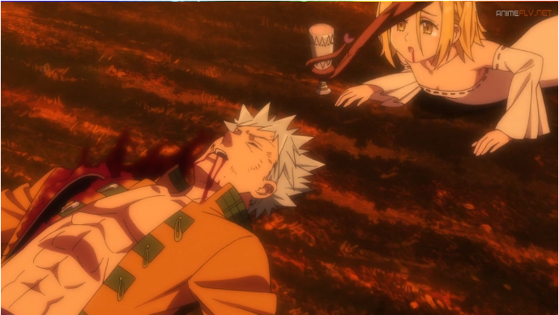
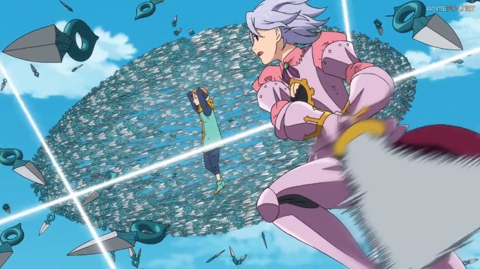

Trailer
Temporada 1
| CAPITULOS | DESCRIPCIÓN | VER CAPITULO |
|---|---|---|
| 1.Los siete pecados capitales | Tras conocer un antiguo caballero, una princesa inicia una aventura increible con la esperanza de derrocar a los tiranos que se han apoderado de su reino. | |
| 2.La espada del caballero | Gilthunder coloca una espada en el centro de la aldea que impide la produccion de cerveza.쮺onseguira Meliodas retirarla y convbertirse en el heroe que salve el pueblo? | |
| 3.El pecado del bosque dormido | Meliodas,Hawk y Elizabeth viajan hasta un bosque aterrador donde Meliodas se jugara el todo por el todo para obtener información. | |
| 4.El sueño de una niña | Diane se une a la misión para salvar a Ban. Esta se verá pronto interrunpida ante el ataque de un enemigo decidido a terminar con la aldea y con los caballeros. | |
| 5.Aunque murieras | Golgius intenta apoderarse de la espada de Elizabeth y Meliodas;el sonido de una misteriosa campana siembra la discordia en el grupo. | |
| 6.El poema de los inicios | Elizabeth y Meliodas deben enfrentarse a los Caballeros Sagrados,Friesia y Ruin para acceder a la mazmorra.Un mal augurio presagia un desastre inminente. | |
| 7.Una reunion conmovedora | Ban,Meliodas y compañia vuelven a estar juntos al fin y ponen rumbo a la Necrópolis en busca del paradero del pecado de la pereza del oso. | |
| 8.El perseguidor imponente | King y Ban se enfrentan por última vez; Guila,componente de los caballeros sagrados, pelea contra Meliodas,Diane y Elizabeth; a Ban le asaltan recuerdos del pasado. |  |
| 9.Latido oscuro | Elaine consigue persuadir a King para que rescate a Meliodas y los demás.Mientras,en la capital,algunos caballeros sagrados empiezan a mostrar su descontento. | |
| 10.El festival de la lucha de vaizel | Cuando se enteran del premio del festibal de lucha,Gideon,Meliodas,Ban y King deciden participar...y también los caballeros sagrados Howzer y Griamore. | |
| 11.Sentimientos reprimidos | Durante la final de la primera ronda del festival, Ban rememora el día que conoció a Meliodas.Mientras,Veronica y Griamore buscan a Elizabeth. | |
| 12.El cañon aterrador | El ataque de un grupo de Caballeros Sagrados desata el caos durante el combate final del torneo. 쮸 que habran venido? |  |
| 13.El Ángel de la destrucción | Meliodas consigue liberarse de la prisión de la diosa Ambar,pero emerge totalmente cambiado y empieza a atacar a aliados y enemigos por igual. | |
| 14.El lector de libros | Meliodas y sus amigos inician la b´´úsqueda de los Siete Pecados Capitales que faltan,y Helbram envia asesinos a la caza del monstruo con armadura. | |
| 15.El caballero profano | Tras derrotar al monstruo con armadura, Gowther aparece comportándose de forma inesperada. Elizabeth descubre cosas sobre el pasado de Meliodas y sobre Liz. | |
| 16.Héroes provocados | Elizabeth convence a Meliodas para que luche,y se descubre quién le robó la consciencia. Hendrickson inicia la resurreción del Clan de los Demonios. | |
| 17.El primer sacrificio | Tras el secuestro de Elizabeth, Meliodas, Ban y Gowther lanzan un ataque contra la capital. Entretanto,el rey Arturo de Camelot se enfrenta a Hendrickson. | |
| 18.Aunque me cueste la vida | Diane se enfrenta a la muerte tratando de proteger a Zeal, y Howzer y Guila tendrán que luchar contra formidables poderes mágicos. |  |
| 19.El Rey Hada espera en vano | King recuerda cómo conoció a Diane hace 700 años y el triste incidente que se produjo entre Helbram y él.쯈ué promesa hicieron estos antaño buenos amigos? | |
| 20.El hechizo del coraje | Para rescatar a Elizabeth, Melliodas y Arturo libran una feroz batalla contra Hendrickson y Gilthunder. | |
| 21.La amenaza inminente | La aparición de Merlin acaba con los planes de Vivian; Meliodas se reencuentra con Elizabeth, y Ban descubre que debe matar a alguien para resucitar a Elaine. | |
| 22.Lo que puedo hacer por ti | Meliodas vuelve a perder a Elizabeth. Ban se enfrenta a la persona que debe matar para salvar a Elaine. Diane y los demás luchan contra la Nueva Generación | |
| 23.Descenso a la desesperación | Con los Siete Pecados Capitales pisándole los talones, Hendrickson hace dos descubrimientos que le proporcionan el poder demoniaco definitivo. | |
| 24.Los heroes | Justo cuando parece que los Siete Pecados Capitales van a ser derrotados por el inconmensurabe poder de Hendrickson, Elizabeth recupera su magia. |
Mejores Momentos
Meliodas vs los 10 mandamientos
Muerte de Meliodas
Meliodas vs Hendrickson
Los 4 Arcangeles
Lista de comentarios